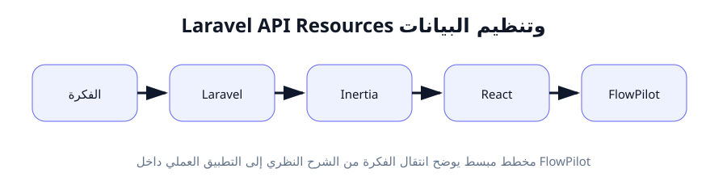
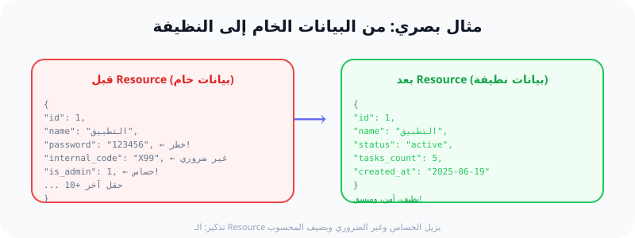

API Resources: كيف ننظم البيانات قبل إرسالها للواجهة؟
"لا ترسل كل شيء من قاعدة البيانات؛ أرسل فقط ما تحتاجه الواجهة. السر في API Resources."
ما هو الـ API Resource؟
الـ API Resource (مورد واجهة البرمجة) هو طبقة (Layer) موجودة بين قاعدة البيانات وواجهة المستخدم. وظيفتها تحويل شكل البيانات (Transformation) قبل إرسالها.
ببساطة: بدلاً من إرسال كل أعمدة جدول قاعدة البيانات (Table columns) إلى React، نمرر البيانات عبر Resource ليختار فقط الحقول التي نحتاجها، ويعيد تسميتها إن لزم الأمر، ويضيف حقولاً محسوبة.
📌 المصطلحات المهمة للمبتدئ:
- API Resource: كلاس (Class) في Laravel يتحكم بشكل البيانات.
- toArray(): دالة (Method) داخل الـ Resource تحدد الحقول التي سترسل.
- Collection Resource: نسخة مخصصة لإرسال قائمة (قائمة مشاريع مثلاً).
- Conditional Attribute: حقل يُرسَل فقط إذا تحقق شرط معين.
لماذا نحتاج لتنظيف البيانات؟
تخيل أن جدول projects يحتوي على 15 عموداً (Column). هل تحتاج واجهة React إلى كل هذه الأعمدة؟ بالطبع لا! إليك الأسباب:
- الأمان (Security): قد يحتوي الجدول على
passwordأوis_adminأوinternal_code. إرسال هذه البيانات للواجهة يعرض النظام لخطر تسريب المعلومات. - الأداء (Performance): كلما زاد حجم البيانات المرسلة، زاد وقت التحميل. تقليل الحقول يسرّع الاستجابة.
- التوحيد (Consistency): يمكنك تغيير اسم الحقل من
is_activeإلىstatusليكون أوضح لمطوري الواجهة. - التحكم (Control): يمكنك إضافة حقول محسوبة (Computed fields) مثل
tasks_countالتي لا توجد في قاعدة البيانات لكنها مفيدة للواجهة.
🧪 تشبيه واقعي: فلتر تنقية المياه
تخيل أن قاعدة البيانات هي خزان مياه كبير. الماء فيه غير نقي ويحتوي على شوائب (بيانات غير مرغوب فيها).
الـ API Resource هو فلتر (Filter) متصل بالخزان. عندما تريد شرب الماء (عرض البيانات في React)، يمر الماء عبر الفلتر ويخرج لك نقياً وصافياً.
الخلاصة: الفلتر يزيل الشوائب ويحسّن الجودة. الـ Resource يفعل نفس الشيء مع البيانات!
🔗 الربط مع FlowPilot
في تطبيق FlowPilot، لدينا موديلين رئيسيين: Project و Task. عند إرسال بياناتهما إلى واجهة React، نريد:
- إرسال
idوnameوstatusفقط من المشروع، وليس كل الحقول. - إضافة عدد المهام (
tasks_count) لكل مشروع. - للمهام: إرسال
titleوassigned_to(اسم المستخدم وليس ID). - إخفاء الحساسية مثل
created_byالداخلي.
لهذا سننشئ ProjectResource و TaskResource!
🛠 5 خطوات تطبيقية عملية
الخطوة 1: إنشاء ProjectResource
نستخدم أمر Artisan لإنشاء ملف الـ Resource:
$ php artisan make:resource ProjectResource
الشرح: هذا الأمر ينشئ ملفاً جديداً في المسار app/Http/Resources/ProjectResource.php. هذا الملف هو "الفلتر" الخاص بمشاريعنا.
الخطوة 2: تعريف الحقول في toArray()
نفتح الملف ونكتب الحقول التي نريد إرسالها:
// app/Http/Resources/ProjectResource.php
public function toArray(Request $request): array
{
return [
'id' => $this->id,
'name' => $this->name,
'status' => $this->status,
'tasks_count' => $this->tasks()->count(),
'created_at' => $this->created_at->format('Y-m-d'),
];
}
الشرح: $this يشير إلى الموديل (Project). tasks_count هو حقل محسوب ليس موجوداً في قاعدة البيانات - نستخدم ->count() لحسابه أثناء الإرسال. ننسق التاريخ ليكون مقروءاً.
الخطوة 3: إنشاء TaskResource
ننشئ Resource للمهام ونربطه بالمستخدم:
$ php artisan make:resource TaskResource
ثم في toArray():
public function toArray(Request $request): array
{
return [
'id' => $this->id,
'title' => $this->title,
'status' => $this->status,
'assigned_to' => new UserResource($this->assignedUser),
'due_date' => $this->due_date?->format('Y-m-d'),
];
}
الشرح: نستخدم new UserResource(...) لتغليف بيانات المستخدم المُسنَد إليه المهمة. علامة ? بعد $this->due_date تعني "إذا كان موجوداً" (تجنب الخطأ لو كان فارغاً).
الخطوة 4: استخدام الـ Resource في الـ Controller
في ProjectController، نغلف البيانات قبل إرسالها لـ Inertia:
// app/Http/Controllers/ProjectController.php
use App\Http\Resources\ProjectResource;
public function index()
{
$projects = Project::paginate(10);
return Inertia::render('Projects/Index', [
'projects' => ProjectResource::collection($projects),
]);
}
الشرح: ProjectResource::collection() يطبق الـ Resource على كل مشروع في القائمة. paginate(10) يجلب 10 مشاريع فقط مع معلومات الصفحات.
الخطوة 5: إضافة خصائص شرطية (Conditional Attributes)
أحياناً نريد إرسال حقل فقط إذا كان المستخدم هو المدير:
public function toArray(Request $request): array
{
return [
'id' => $this->id,
'name' => $this->name,
'status' => $this->status,
'internal_notes' => $this->when(
$request->user()?->is_admin,
$this->internal_notes
),
];
}
الشرح: $this->when(شرط, قيمة) ترسل الحقل فقط إذا تحقق الشرط. هنا، internal_notes ترسل فقط لو كان المستخدم مديراً (is_admin == true). هذا يعزز الأمان.
🔍 شرح الكود سطراً سطراً
// 1️⃣ نستخدم الكلمة المفتاحية class لتعريف كلاس جديد
// 2️⃣ extends JsonResource يعني هذا الكlass يرث خصائص JsonResource
// 3️⃣ toArray() هي الدالة التي تحدد ماذا نرسل
// 4️⃣ $this->id السهم -> يعني "خاص بـ" - نصل لحقل id من الموديل
// 5️⃣ 'name' => $this->name المفتاح (key) في JSON هو 'name' وقيمته من قاعدة البيانات
// 6️⃣ ::collection() النقطتين المزدوجتين تعني "استدعاء دالة ثابتة من الكلاس"
// 7️⃣ $this->when() دالة ذكية: ترسل الحقل فقط إذا تحقق الشرط
✅ النتيجة المتوقعة
بعد تطبيق الـ Resource، عندما تفتح صفحة المشاريع في React، ستصل البيانات بهذا الشكل:
{
"data": [
{
"id": 1,
"name": "مشروع تصميم الموقع",
"status": "active",
"tasks_count": 5,
"created_at": "2025-06-19"
}
],
"links": { ...معلومات الصفحات... }
}
ماذا نلاحظ؟ البيانات أصبحت نظيفة، لا توجد حقول داخلية أو حساسة. فقط ما تحتاجه React. tasks_count ظهر كرقم محسوب.
⚠️ الأخطاء الشائعة (4+)
❌ الخطأ 1: نسيان استخدام Resource في الـ Controller
المشكلة: إرسال $projects مباشرة دون ProjectResource::collection().
الحل: تأكد من تغليف البيانات بالـ Resource في كل دالة Controller تُرجع بيانات.
❌ الخطأ 2: إرسال علاقة (Relationship) دون تحميلها مسبقاً (Lazy Loading)
المشكلة: كتابة $this->tasks()->count() قد ينفذ استعلام SQL إضافي لكل مشروع (N+1 problem).
الحل: استخدم Project::withCount('tasks')->get() في الـ Controller لتحميل العدد مرة واحدة.
❌ الخطأ 3: إرسال علاقة بدون ? (Nullable)
المشكلة: لو كان assigned_user_id فارغاً (null)، سيظهر خطأ "Call to a member function on null".
الحل: استخدم $this->whenLoaded('assignedUser') أو أضف علامة ?.
❌ الخطأ 4: نسيان استيراد (Import) الـ Resource
المشكلة: كتابة ProjectResource::collection(...) دون وجود use App\Http\Resources\ProjectResource; في أعلى ملف الـ Controller.
الحل: أضف السطر use App\Http\Resources\ProjectResource; بعد namespace.
❌ الخطأ 5: إرسال البيانات الحساسة مثل password
المشكلة: نسيان إزالة password أو remember_token من toArray().
الحل: راجع toArray() جيداً وتأكد من أنك تختار يدوياً كل حقل بدلاً من استخدام $this->all().
📊 الرسوم البيانية
مخطط: تدفق البيانات مع API Resources

مثال توضيحي: من البيانات الخام إلى النظيفة

📝 الخلاصة
- ✅ API Resource هو طبقة تحويل (Transformation Layer) بين قاعدة البيانات وواجهة المستخدم.
- ✅ نستخدم
php artisan make:resourceلإنشائه، ونحدد الحقول في دالةtoArray(). - ✅ نطبق الـ Resource في الـ Controller باستخدام
::collection()للقوائم. - ✅ نضيف خصائص شرطية
$this->when()لإرسال بيانات حسب صلاحية المستخدم. - ✅ في FlowPilot، ProjectResource و TaskResource يضمنان وصول بيانات نظيفة ومنظمة لـ React.